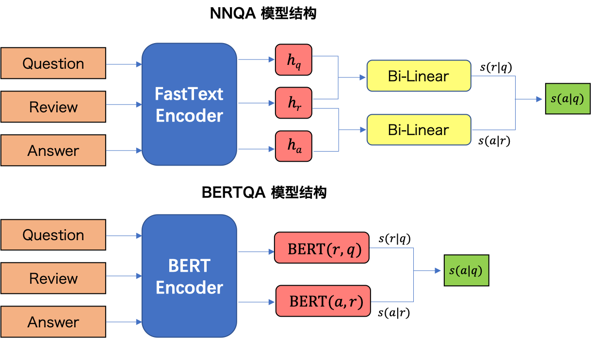

BERTQA
Discovering Relevant Reviews for Answering Product-related Queries¶
1 问题描述¶
给定一特定产品相关的有标注的问题-答案对 Q-A 和无标注的评论 R，训练一个排序模型，在输入一个问题 Q 时，对评论 R 中的每条评论 r 进行评分，选取出评分最高的那条评论作为问题 Q 的潜在答案。
2 模型描述¶
2.1 模型概述¶
本文提出了两个神经模型 NNQA 和 BERTQA 来在产品相关的评论中发掘与问题最相关的评论。其中，NNQA 模型采用了 FastText 作为句子编码器，通过将语句中每个预训练的词向量取平均来将问题 q、答案 a 和评论 r 分别编码成 h_q,h_a,h_r；然后采用双线性函数来计算问题和评论之间的相关性 S(r|q)、评论和答案之间的相关性 S(a|r)；从而将 S(r|q) 和 S(a|r) 合并计算出问题和答案之间的相关性 S(a|q)。 BERTQA 模型采用和 NNQA 模型相同的框架，不同的是 BERTQA 模型使用了 BERT 来作为编码器来对问题 q、答案 a 和评论 r 的语句进行编码。
NNQA 和 BERTQA 的模型结构如下图所示。

2.2 细节实现¶
NNQA¶
首先，将输入的问题语句 q、答案语句 a 和评论语句 r 采用 FastText 作为编码器，通过将语句中每个预训练的词向量取平均来将问题 q、答案 a 和评论 r 分别编码成 h_q,h_a,h_r
然后，采用双线性函数来计算问题和评论之间的相关性 S(r|q)、评论和答案之间的相关性 S(a|r)
最后，将 S(r|q) 和 S(a|r) 综合起来计算问题和答案之间的相关性 S(a|q)
BERTQA¶
首先，将输入的问题语句 q、答案语句 a 和评论语句 r 采用 BERT 作为编码器进行编码，然后直接计算问题和评论之间的相关性 S(r|q)、评论和答案之间的相关性 S(a|r)
最后，计算出问题和答案之间的相关性 S(a|q)
训练和测试¶
在训练阶段，NNQA 和 BERTQA 的优化目标都是最小化差额损失
其中，a 为真实的答案，a' 为随机选择的非答案语句，\delta 为差额超参数。
在测试阶段，直接使用 S(r|q) 作为相关性得分来排序评论语句，选择出得分最高的那条评论作为问题的潜在答案。
参考文献¶
Shiwei Zhang, Jey Han Lau, Xiuzhen Zhang, Jeffrey Chan, and Cecile Paris. Discovering Relevant Reviews for Answering Product-Related Queries. ICDM 2019. [paper]